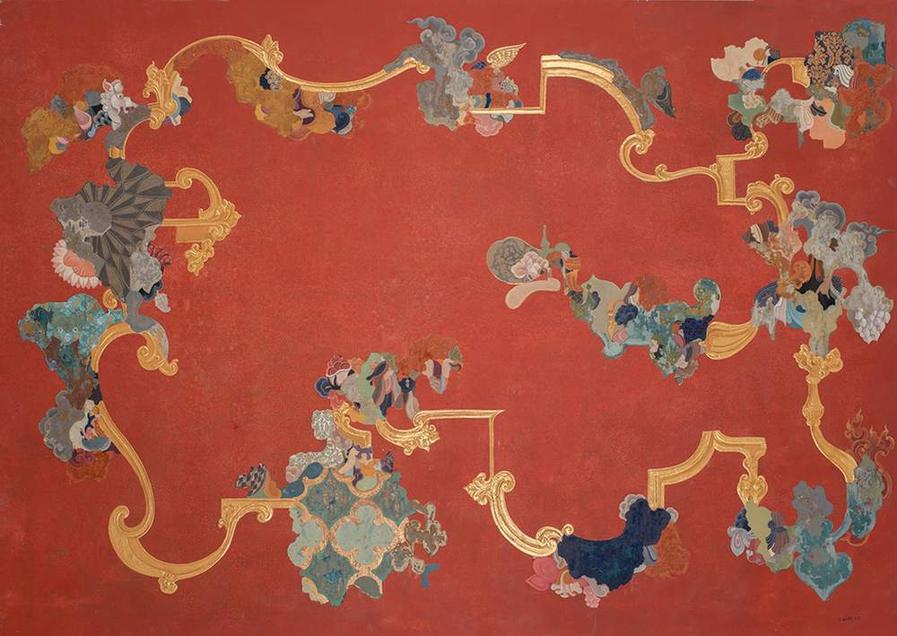

Image Credit - Gallery Espace
Manjunath Kamath
Manjunath Kamath creates art in a diverse range of media, including clay, digital art, painting, and drawing. His artwork is influenced by a variety of cultural references, including the sculptures, frescoes, and carvings in the basadis